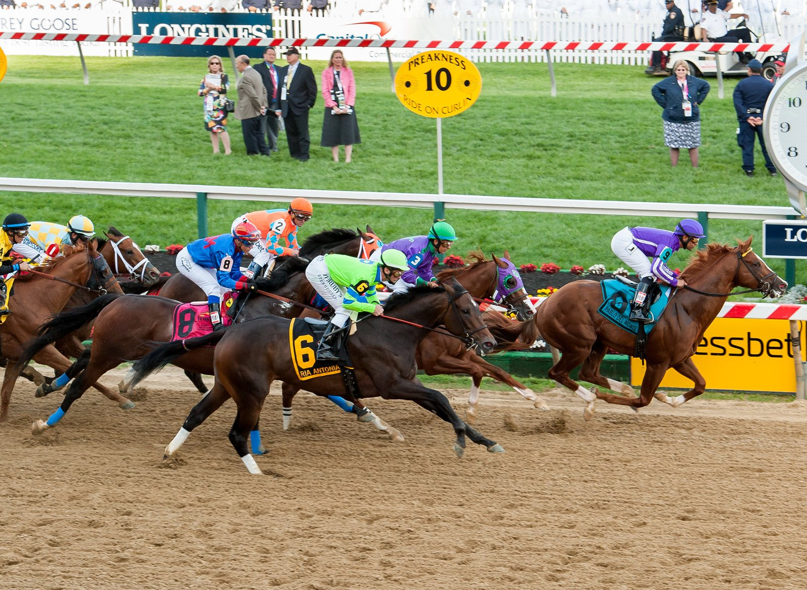

El fin de semana turf: el GP de la Hispanidad y seis grupos en Reino Unido y Japón
La Zarzuela reparte 35.000 euros el domingo 11 en el Gran Premio de la Hispanidad, la carrera de más dotación de su sexta jornada de otoño. Newmarket corre el sábado el Dewhurst y Tokio reparte dos pruebas graduadas.

La Zarzuela reparte 35.000 euros el domingo 11 en el Gran Premio de la Hispanidad, la carrera de más dotación de su sexta jornada de otoño. Newmarket corre el sábado el Dewhurst y Tokio reparte dos pruebas graduadas.
El Hispanidad, Listed local de categoría A, se disputa sobre 1.600 metros y cierra un programa de seis carreras en el hipódromo madrileño. La segunda en importancia es el Premio Subasta ACPSIE 2025, de categoría B, sobre 1.400 metros y con 22.345 euros en juego. Completan la tarde el Premio Fernando Melchor de Cría Nacional (1.800 metros, 8.000 euros), el Premio Luis Urbano para amazonas y gentlemen (1.600 metros) y un hándicap dividido sobre 2.200 metros en dos partes: el Premio Marqués de Villatoya y el Premio Familia Ceca. El hipódromo aún no ha publicado los declarados.
En Newmarket, el Dubai Future Champions Day del sábado 10 de octubre reúne siete carreras, cuatro de ellas de grupo. La principal es el Darley Dewhurst Stakes, Grupo I para dos años sobre siete furlongs (unos 1.400 metros), con salida prevista a las 15:00 hora local. En su palmarés figuran Frankel, Dawn Approach y Churchill. El programa incluye también el Cesarewitch, el gran hándicap de fondo sobre 18 furlongs (unos 3.600 metros), además del Darley Stakes, el Zetland Stakes y el Autumn Stakes. La primera carrera sale a las 13:15.
Japón aporta dos citas en Tokio, ambas sobre hierba. El sábado se corre el Saudi Arabia Royal Cup, Grupo III para dos años sobre 1.600 metros, con 36 millones de yenes para el ganador. El domingo llega el Ireland Trophy, Grupo II para hembras de tres años en adelante sobre 1.800 metros, con una bolsa total de 119,6 millones de yenes y 55 millones al ganador. La declaración de participantes del Ireland Trophy se cierra el jueves 8; la yegua Lavanda lo ganó en 2025.
— Redacción de Galope al Día